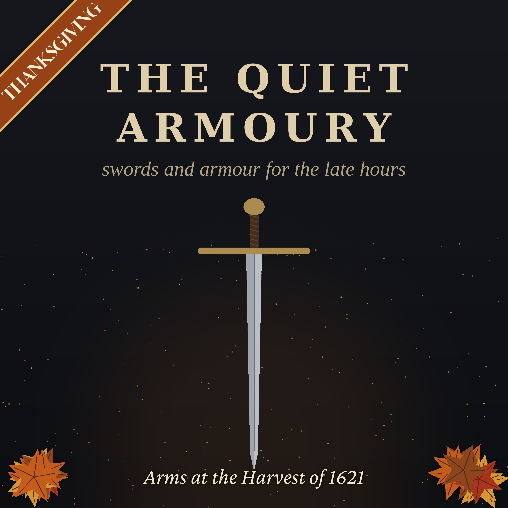

The Quiet Armoury · Holiday bonus · 21 min
Arms at the Harvest of 1621
A Thanksgiving bonus. Plymouth, autumn 1621: musket, sword and corselet, the matchlock and its burning cord, the first encounter on the cape, the Wampanoag and the treaty with Ousamequin (Massasoit), the harvest, the day the colonists exercised their arms and ninety Wampanoag men came, three days of feasting, two kinds of weapon, what came after, and how a harvest gathering became a national holiday. Chapters: 00:00 Opening 02:23 Musket, sword, and corselet 03:42 The match 05:12 The first encounter 07:07 The people of the land 08:44 The harvest 10:01 Exercising arms 11:16 Ninety men 12:31 Three days 13:50 Two kinds of weapon 15:13 The captain's sword 16:12 What came after 17:43 A holiday 18:57 Back in the rack Read by a synthetic voice; script written and fact-checked by the show's team.
The script
On a bright autumn morning, on a hillside above a grey bay, a boy sits on a bench outside a small wooden house, with a breastplate across his knees.
It is heavy, and old, and a little dented. He has a rag in one hand and a pot of grease beside him, and he is rubbing at a patch of rust along its edge, working the grease into the iron with small, careful circles, the way he has been shown.
Below him, at the bottom of the hill, there is a single street of rough houses, with gardens behind them, running down to the shore. Smoke rises from the chimneys. Along the fields, the last of the corn stands brown and dry. And all around, as far as he can see, there are woods... red and gold and brown, with the wind moving in them.
The Quiet Armoury. A Thanksgiving story... Arms at the harvest of sixteen twenty-one.
If these evenings keep you company, a rating on Apple Podcasts, or a word to a friend, helps the show find the people who need it. Thank you.
It is the autumn of the year sixteen twenty-one. You are fourteen. A year ago, you crossed the Atlantic in a small, crowded ship called the Mayflower, with a hundred other passengers, from England to this coast. You have lived through your first winter here. Many did not.
And the captain of the colony, a short, quick-tempered soldier who has fought in the wars in the Low Countries, has given you a job. You are to help him keep the colony's arms in order. The muskets, the swords, the armour. To clean them, and oil them, and keep them from rusting in the sea air.
Today, he has told you, the arms must be ready. The harvest is in. And there is to be a feast.
Chapter one. Musket, sword, and corselet.
The settlers had come prepared to defend themselves. They did not know what they would find in this new land, and they had heard many stories.
So they brought arms. Muskets, mostly... long, heavy guns, fired from the shoulder. Swords, for every man who could carry one. And armour. Not the full suits of the knights of old, which were long out of fashion. But breastplates and backplates, buckled together at the sides, which the soldiers of the time called a corselet. And iron helmets, some of them broad-brimmed and some with a high crest, to keep off a blow from above.
When the first party of men went ashore on the cape, a year before, to explore the land, the account they later wrote says plainly how they went. Sixteen men, every man with his musket, his sword, and his corselet, under the command of their captain.
That is what you are cleaning now. One of those corselets.
Chapter two. The match.
Most of the muskets the colonists carried were matchlocks.
To fire a matchlock, you need a match. Not a match like ours, but a long cord, soaked in saltpetre and dried, which burns very slowly at one end, like the tip of a smouldering rope. The musketeer keeps it lit, and when he wants to fire, he squeezes a lever, and the glowing end of the cord swings down into a little pan of fine gunpowder. The powder flashes, the flash runs through a tiny hole into the barrel, and the gun goes off with a great bang and a cloud of white smoke.
It is a clumsy weapon. The match must be kept burning all the time you might need it, day or night. Rain can put it out. At night, its glow can be seen from far away. And it takes a long time to load: powder, then the ball, then a wad, rammed down, then more powder in the pan.
A few of the colonists had newer guns, with a flint that struck sparks from a piece of steel, so that no burning match was needed. Those were prized. But most men, here, carried the old matchlock, and smelled always a little of smoke.
Chapter three. The first encounter.
The captain does not talk much about the first winter. But you remember the story of one morning from it, told over and over by the men who were there.
It was in December, the winter before, on the shore of the cape, before the colonists had chosen where to settle. A small party had camped behind a barricade of logs and branches. Before dawn, as they were packing their things, there was a sudden cry, and arrows came flying out of the dark trees.
The men in the woods were Nauset, people of the cape. The colonists did not yet understand why they had been attacked. Weeks before, they had found corn stored in the ground, and taken it. And some years before that, English sailors had come to this coast, and carried some of its men away.
The men had laid their muskets down. Some ran for them. Others fired the few they had at hand. There was a short, confused exchange in the half-light, arrows and musket shots, and then it was over. The other men melted back into the woods. Nobody on either side, it seems, was killed.
Afterwards, the colonists picked up the arrows that had stuck in their coats and their barricade. Some were tipped with brass, some with deer horn, and some with the claws of eagles. They gathered some of them up to send home to England, as a curiosity. They called the place the First Encounter.
Chapter four. The people of the land.
The land the colonists had come to was not empty. It was the home of the Wampanoag, the People of the First Light, who have lived along these shores and rivers for more than twelve thousand years, and live here still.
But in the years just before the colonists came, a terrible sickness had swept through the coastal villages, probably brought by European sailors and fishermen. Whole villages had died. The place where the colonists built their settlement had been a Wampanoag village called Patuxet. When the colonists arrived, its fields were overgrown, and its people were gone.
In the spring, after that first terrible winter, a Wampanoag leader came to the colony with his men. His name was Ousamequin, though the colonists usually called him by his title, Massasoit, the great leader. His people had been weakened by the sickness, and they had enemies to the west. The colonists were weak too, and few. And so, after much talk, the two sides made an agreement. Each would help the other, if they were attacked. Neither would harm the other's people.
It was an agreement of necessity, between two peoples who did not fully trust each other. But for now, it held.
Chapter five. The harvest.
That spring, the colonists planted corn, as they had been taught by a Wampanoag man named Tisquantum, whom they called Squanto. Some years before, he had been kidnapped by an English captain and sold in Spain. He had made his way to England, and learned English there, and at last had come home, to find his village gone. He showed them, as the governor later told it, how to plant the corn in little hills, with fish buried beside it to feed the soil.
The barley did only middling, and the peas were not worth the gathering. But the corn did well. And by the autumn, there was a harvest. Not a large one. But enough, perhaps, to see them through the winter, if they were careful.
The governor of the colony decided that they should give thanks, and rejoice together, now that the harvest was in. He sent out four men to go fowling... to shoot ducks and geese and other birds... so that there would be meat for a feast.
Chapter six. Exercising arms.
And this is why you are cleaning the corselet.
Because the feast is not only to be eating. The men are to exercise their arms. To march, and drill, and fire their muskets, together, as soldiers do on a feast day, to show that they are ready. The captain wants every gun clean, every match dry, every breastplate bright.
One of the colonists wrote about that harvest, in a letter home to England. It is almost the only account of it that we have. And in the middle of a sentence about the feasting, he writes that, amongst other recreations, they exercised their arms.
It is a small phrase. But Wampanoag tradition, and some historians, say it may be the key to what happened next. Because the sound of guns, fired in volleys on a hillside, carries a long way through the autumn woods.
Chapter seven. Ninety men.
The letter, in the words of its time, says that many of the Indians came amongst them. And among them came their greatest king, Massasoit, with some ninety men.
Nobody knows for certain why they came. Perhaps they had been invited. Perhaps they heard the guns, and came to see what was happening, ready for trouble, as allies were bound to do under the agreement. Perhaps both. The letter does not say.
But they came. Ninety men, walking out of the woods and into the little settlement... nearly twice as many as all the colonists put together.
And so the feast became a gathering of two peoples. For three days, the letter says, the colonists entertained and feasted them. And the Wampanoag went out, and killed five deer, and brought them to the governor, and to the captain, and to others, as their share of the feast.
Chapter eight. Three days.
What was it like?
The letter tells us very little. But we can imagine some of it. The smell of roasting venison and wildfowl over open fires. Corn, made into bread or a kind of porridge. Perhaps fish, and shellfish from the bay, and the last of the summer's squash and beans.
The men of the colony in their breastplates and helmets, shining with the grease you rubbed into them, marching and wheeling on the open ground, and firing their muskets into the air with a great roll of smoke. The Wampanoag men watching, with their bows and arrows, their deerskin clothes, some of them with English goods they had traded for... knives, and kettles, and cloth.
And perhaps there were games. Races, and contests of strength and skill, as there often were at gatherings like this, among both peoples. And a great many people, speaking two different languages, trying to understand each other across a fire.
Chapter nine. Two kinds of weapon.
You notice, during those three days, how different the two peoples' weapons are.
The colonists' muskets are loud, and heavy, and slow. They can kill at a distance, and their noise and smoke are frightening. But a musket takes a long time to reload, and in the rain it often will not fire at all.
The Wampanoag bow is quiet, and quick. A good archer can loose several arrows in the time it takes to load a musket once. An arrow can be made from what grows in the woods. And the Wampanoag hunters know these woods as their own home, in a way that the colonists, in their boots and iron, do not yet.
Each side respects, and fears a little, what the other can do. And the armour you have spent the morning cleaning was brought for exactly that reason: an iron breastplate can turn an arrow. But it is hot, and heavy, and clumsy in the woods. Before many years have passed, the colonists will leave most of their armour hanging on the wall.
Chapter ten. The captain's sword.
And the captain himself?
He was a small man, in a large job, and quick to anger; an enemy later mocked him as Captain Shrimp. He had been hired by the colonists to be their military leader, though he was not one of their church. He was brave, and he did not always choose peace when he might have.
His sword is said to survive. A long, straight blade, kept today in a museum in the town of Plymouth, in Massachusetts, Pilgrim Hall, the oldest public museum in the country that has never closed its doors. Whether it truly was his, after four hundred years, is hard to be sure. But it has been called his for a very long time.
Chapter eleven. What came after.
The peace of that autumn did not last forever.
For a while, the agreement between the colonists and the Wampanoag held, for more than fifty years. But more and more settlers came, from England, to this coast. They wanted land. They brought their own laws, and their own ways. And in the end, in the time of Massasoit's son, the two peoples went to a terrible war, which killed thousands on both sides, and broke the power of the Wampanoag and their neighbours in this part of the land. Yet the Wampanoag endured. Their nation lives on these shores today.
So the story of the harvest of sixteen twenty-one is remembered in different ways. For many Americans, it is the story of the first Thanksgiving: two peoples sharing a feast. For many Native people, the day is a time of mourning... for the land and the lives that were lost in the years that followed. Since nineteen seventy, on Thanksgiving Day, some of them gather on a hill above the harbour at Plymouth, for a National Day of Mourning.
Both memories are true. Both belong to the story.
Chapter twelve. A holiday.
The harvest feast of sixteen twenty-one was not called Thanksgiving at the time. The colonists' own days of thanksgiving were holy days, spent in prayer and in church. This was something else: a celebration, a rejoicing, after a harvest.
Over the next two hundred years, many towns and states in America held their own days of thanksgiving, in the autumn. And then, in eighteen sixty-three, in the middle of the American Civil War, the president of the United States proclaimed a national day of thanksgiving, on the last Thursday of November. It has been kept ever since, now on the fourth Thursday... a day for families to gather, and eat together, and give thanks.
And the small gathering on the hillside in sixteen twenty-one, with its deer and its wildfowl and its marching men in their breastplates, became, in the telling, the first of them all.
Chapter thirteen. Back in the rack.
On the evening of the third day, the guests go home, back along the paths into the woods. The fires burn down. The colony is quiet again.
And you sit on the bench outside the store house, as the light goes, with the breastplate across your knees once more. It is smudged with smoke now, and spotted with grease from the cooking fires, and there is a fresh scratch along one side that was not there before. You wipe it down, slowly, carefully, and oil it again, and hang it back on its peg in the dark of the store house, beside the others, with the muskets in their rack, and the helmets on the shelf above.
Outside, the first cold of winter is in the air. The woods are dark. Somewhere in them, ninety men are walking home by paths you do not know, to villages you have never seen. And in the little settlement on the hill, there is food in the store house, for now, and wood for the fires, and a winter ahead.
You close the door, and go home to the fire.
From The Quiet Armoury, a happy Thanksgiving.
This story was read by a synthetic voice. If these stories keep you company at night, follow the show... it helps others find it.
Also from the late hours: Embers of History · Slow Orbit · Myth and Score
On YouTube: Opera Stories · Slow Orbit
Free line-by-line English translations of art songs